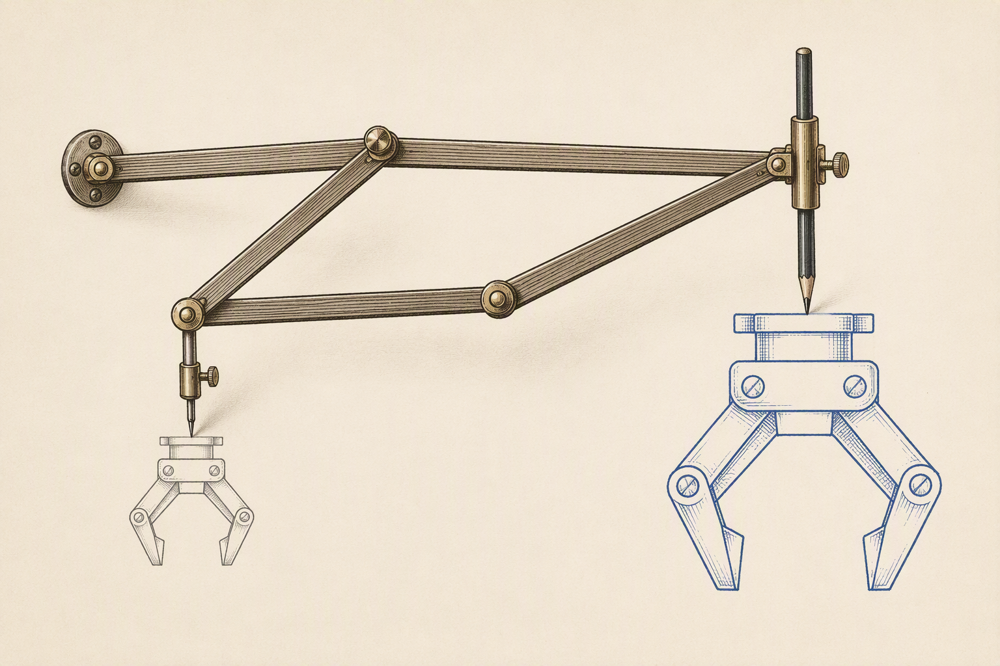
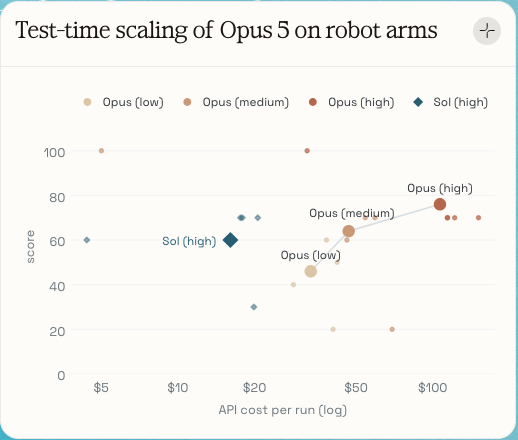
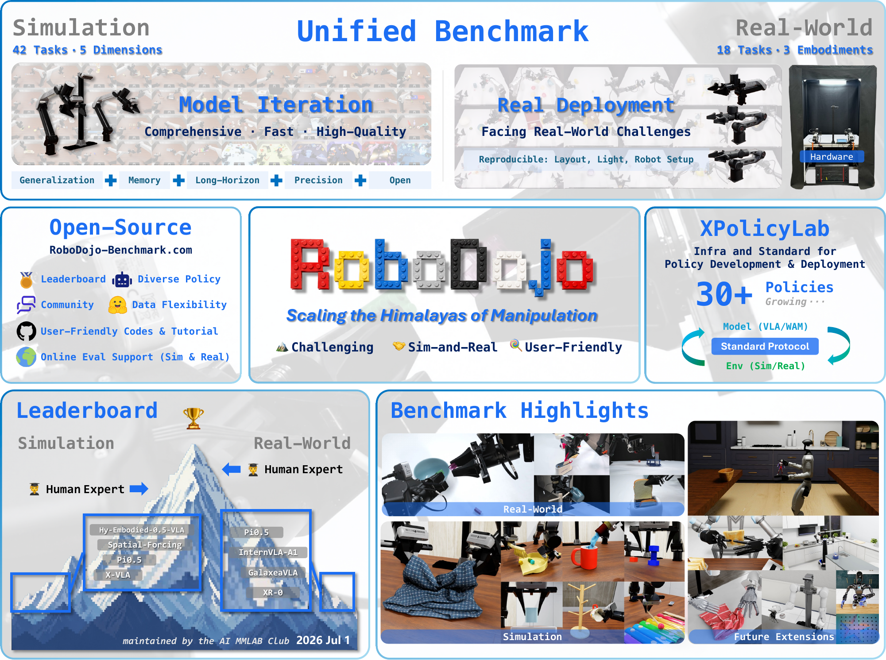
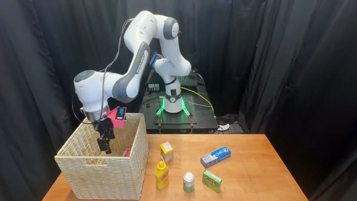
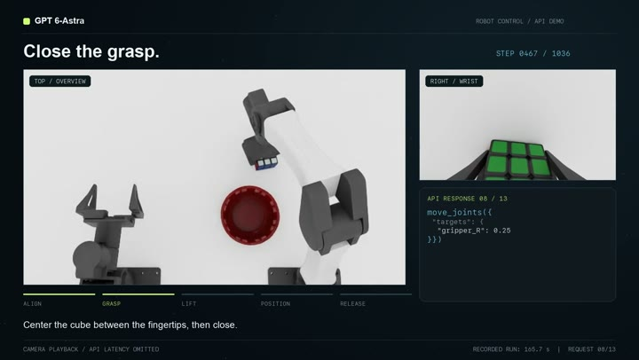
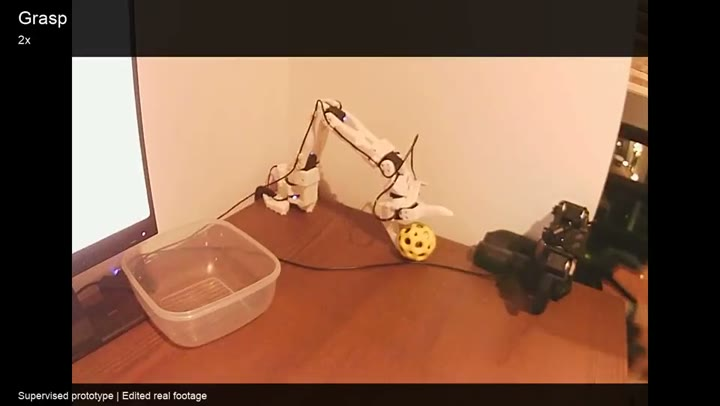
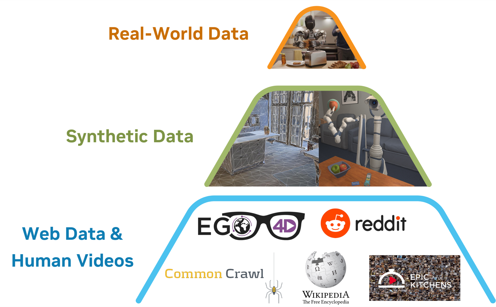
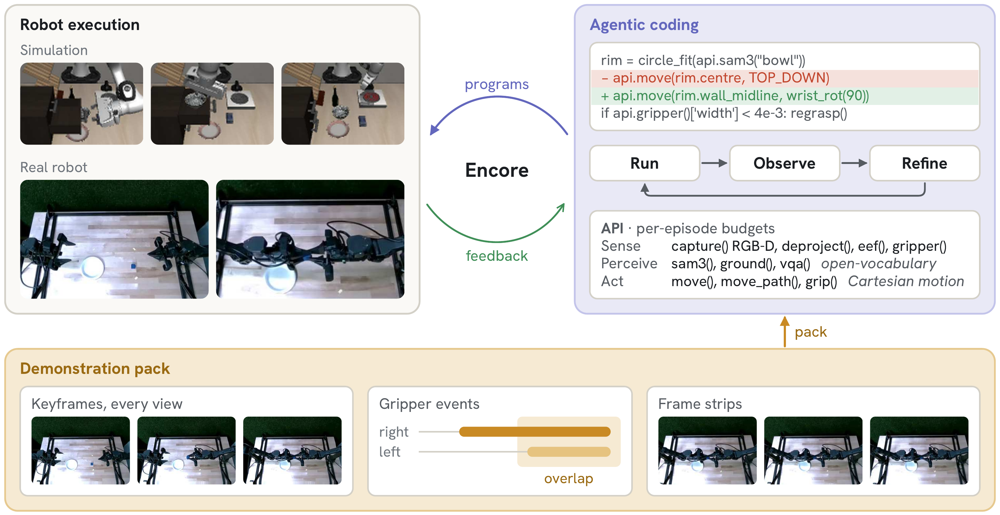
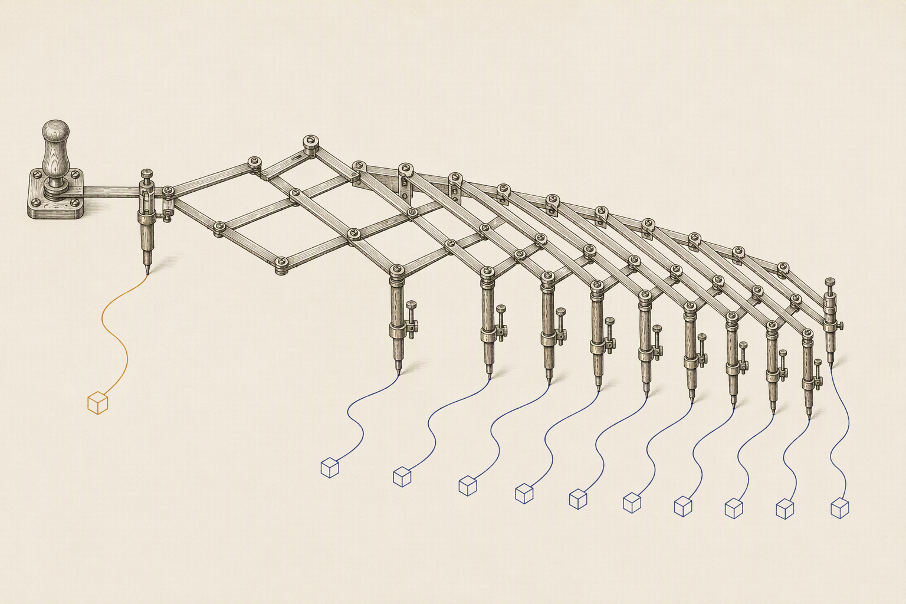

Scaling few teleoperated demonstrations with agentic augmentation
Bangya Liu
bangya@abaka.ai

Booth #927
2026·09
“
I've always been cautious and skeptical of near-term adoption of robots. Now I'm reconsidering. The timeline for real robots has just advanced considerably.
Ken Goldberg · “Goosebumps: a Paradigm Shift is Occurring in Robotics” · 18 Sep 2026
pantograph · abaka ai ·Booth #927K. Goldberg, X Article, 2026-09-18 · x.com/ken_goldberg/status/210098641276208790901 · WHY NOW
Why now
General models already drive robot arms

FIG — test-time scaling of Opus 5 on robot arms · Robocurve
Robocurve: Opus 5 stacks blocks on real arms from raw joint targets, no IK, no VLA. 46% at low effort, 76% at high.

FIG — RoboDojo: 42 sim + 18 real tasks · Fig. 1
GPT-6 Astra, a general model used as the policy, ranks ahead of all 40 public policies on RoboDojo: 22.5% average success. GPT-5.5 on the same interface: 0.9%.
pantograph · abaka ai ·Booth #927Robocurve, Test-time scaling of Opus 5 on robot arms, 2026-08-19 · Zhang et al., An Unexpected Robot Policy: GPT-6 Astra on RoboDojo, arXiv:2609.24170, Tab. 1 · RoboDojo arXiv:2607.04434, Fig. 102 · WHY NOW
Why now
LIBERO-PRO: move the objects, rewrite the instruction
VLAs trained on the benchmark's demos
OpenVLA0
π00
π0.513
coding agents
CaP-Agent018
ASPIRE opus-4.672
ASPIRE opus-589
ENCORE ours96
% sealed success, 60 perturbed cells × 50 episodes. Not the same game: each agent practises 15 episodes per cell and calls a perception API; the VLAs see the change cold.
pantograph · abaka ai ·Booth #927LIBERO-PRO arXiv:2510.03827 · VLA, CaP-Agent0, ASPIRE opus-4.6 as reported in ASPIRE arXiv:2607.00272 · ASPIRE opus-5 rerun and ENCORE: Kang et al. 202603 · WHY NOW
If an agent can write the policy, why collect robot data at all?
I think we still should, and the reason tells us what agents are good for.
pantograph · abaka ai ·Booth #92704 · THE QUESTION
Agent policies
Three ways to put a frontier model on a robot

01 · MODEL OFFLINE
Agent writes the program
Write, run, repair, then ship code. The robot runs no model. Goldberg calls it Agentic Robotics.
CaP-X · ASPIRE · GaP · HarnessPAI · ENCORE

02 · MODEL EVERY STEP
Model in the loop
A VLM looks, emits one JSON action or tool call, looks again. Isola calls these robot-use agents.
GPT-Policy · Astra on RoboDojo · OpenETA · Agent as Policy

03 · FAST DECISIONS
Small decision model
Jev scores typed choices in one pass, under a second per call, on top of a scripted executor.
community repos only, no paper yet · jev-robot-control, RoboJEV, EmbodiedJev
click a tile to enlarge · Robocurve · Jiafei Duan on X · GPT-Policy · GaP · Jev community repo · Waddle Labs
Why not the final policy
A loop can't react faster than it looks
“Real-time control would require roughly 83 Hz; current non-reasoning inference runs at ~0.2–0.4 Hz.”Anthropic · Claude plays robotics · 9 Jul 2026 · appendix: latency
pantograph · abaka ai ·Booth #927OpenETA 2608.03924 Tab.3 (1045 s / 30.7 calls) · GPT-Policy 2609.19138 Tab.1 (18.9 min / 76.7 decisions) · Guava 2606.18363 Tab.4 · jev-robot-control README (181.8 s / 226 calls) · π0 50 Hz · anthropic.com/research/claude-plays-robotics06 · NOT FINAL
The idea
The agent is the teleoperator
A frontier model is too slow to sit inside a 50 Hz control loop. It can still do what a teleoperator does: produce demonstrations, offline, for a fast policy to learn.
Real robot data at the top of the pyramid stays scarce and expensive.
Agent policies fill the middle: many trajectories, in new layouts, from a few seeds.

agent policies
FIG — the robot data pyramid · GR00T N1, Fig. 1
pantograph · abaka ai ·Booth #927NVIDIA, GR00T N1, arXiv:2503.14734, Fig. 108 · THE IDEA
The idea · evidence
The agent makes the data, a small policy learns it
HARNESSPAI · SEP 2026
34.9 → 73.7%
π0.5 fine-tuned on a coding agent's program rollouts, held-out LIBERO-PRO seeds.
rollouts cost ≈1 s and $0 of API each once the program converges
EMBODIEDSWE · SEP 2026
18 → 69%
VLA success as agent-generated demos grow from 10 to 400 per task. On a real robot, π0.5-DROID trained only on them: full lamp disassembly 20% vs 0%.
agent-aided diversity beats script-only replay out of distribution: 0.233 vs 0.066
HA, FLORENCE, SONG · 2023
67.0 vs 33.8
The distilled student beats the LLM-planned teacher that collected its data, because the data kept its retries.
Scaling Up and Distilling Down, CoRL 2023
pantograph · abaka ai ·Booth #927HarnessPAI 2609.29166 p.28 · EmbodiedSWE 2609.27308 Fig.9, Tab.1–2 · Ha et al. 2307.14535 Tab.209 · THE IDEA
The idea · limits
A data engine, but not an infinite, expert one
Tempting claim
What the papers show
Infinite
Only for tasks the agent can solve, at hours and $35–73 per solved task.
Expert
After fine-tuning the student trails the teacher, 73.7 vs 96.5. Adding RL closed the gap in one paper (97.8).
Self-checking
One model reward-hacked in 43% of its runs. The engine needs an independent judge.
Just add demos
One demo from a different layout, pasted into Astra's context: 22.9% → 17.9% (image) and 12.9% (text). The losses came on tasks it already solved. The authors' guesses, untested: it copied the example's geometry into the new scene, or precision was the bottleneck, not understanding.
pantograph · abaka ai ·Booth #927EmbodiedSWE Tab.8, Tab.13 · HarnessPAI p.4, p.28 · SynthDemo-RL 2609.21650 Tab.II · Astra-RoboDojo 2609.24170 Tab.3, §4.510 · THE IDEA
OUR PAPER
ENCORE
Few-shot agentic discovery of manipulation strategies
Yifan Kang, Zihan Wang, Zhiwen Fan, Bangya Liu
MIT · 2077AI · Texas A&M · UW–Madison
Where do the few teleoperated demos go?
ENCORE · the idea
Demos as evidence the agent reads, not training data

FIG — demo pack → coding agent → program → simulation or real robot
A task instruction like “hand over the cube” leaves out the how: grasp, order, contact.
Each teleop demo becomes a pack: keyframes at the demonstrator's gripper events, the state path, the actions. Nothing is labelled.
A coding agent reads the pack, writes a program, tests it on 15 episodes, and freezes it.
Sealed evaluation: the success signal is never shown.
pantograph · abaka ai ·Booth #927Kang, Wang, Fan, Liu · ENCORE: Few-Shot Agentic Discovery of Manipulation Strategies, 2026 · §3, Fig. 100 · ENCORE
ENCORE · what the demos change
Demos matter where the agent can't see the answer
LIBERO-PRO
96.3% sealed vs ASPIRE 89.3% on the same model. The first program already works in 29/60 cells with demos, 1/60 without.
Silent failure
Bottom drawer: without demos, 33 versions and the note “cannot be engaged”, 0/50. With demos, 50/50.
Unstated goal
RoboDojo “build a tower”: 0/450 without demos, 95/450 with three.
Real robot
Five demos per task: cube handover 9/10, cup inversion 9/10.
Six contact-precise RoboDojo tasks score 0 with or without demos.
VIDEO — bottom drawer, sealed episodes · no demos 0/50 · three demos 50/50
pantograph · abaka ai ·Booth #927ENCORE §4.2–4.6, Tab. 2, App. B · ASPIRE arXiv:2607.00272 · RoboDojo arXiv:2607.0443400 · ENCORE
Pantograph
Trace a few demos, draw many copies

A few teleop demos
spent where the agent can't see the answer: unstated goals, silent failures, contact
ENCORE 96% sealed
Agent policy
program, or a model in the loop
≈1 s, $0 per rollout
Many rollouts
new layouts, kept only if an independent judge agrees
HarnessPAI EmbodiedSWE
Learned policy
runs on the robot at control rate
Each arrow has been shown on its own, by different groups. Not yet shown end to end: teleop seeds → agent → rollouts → policy, and where teleop is worth the most. That is our next experiment.
We built data for language models. Now we ask what today's strongest language models mean for physical intelligence. One answer: they change where human demonstrations are worth spending.